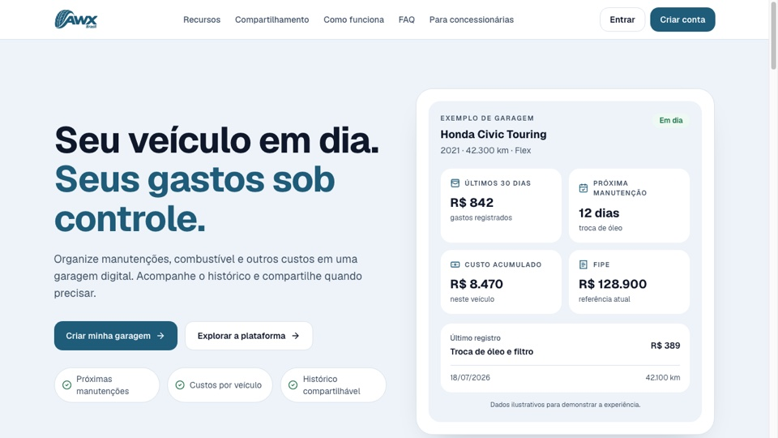

Projeto autoral
Web + Mobile
AWX / All Wheels Experience
Plataforma de gestão automotiva para organizar histórico de manutenção, despesas, referência FIPE e compartilhamento ou transferência de veículos.
Atuação: desenvolvimento end-to-end do produto, da modelagem e autorização à experiência web e integração mobile.
- Supabase Auth, PostgreSQL, RLS e RPCs para proteger e operar dados do domínio.
- Fluxos de manutenção, custos, FIPE e histórico compartilhável do veículo.
- Aplicação web com empacotamento Android/iOS via Capacitor.
Next.jsReactTypeScriptSupabasePostgreSQLCapacitor